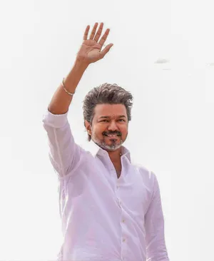

Chandrasekaran Joseph Vijay was born on 22 June 1974 in Madras (Chennai).
He began acting as a child artist in Vetri (1984) and debuted as a lead in Naalaiya Theerpu (1992).
He became one of Tamil cinema’s biggest stars, popularly known as “Thalapathy” for his mass appeal.
In 2024, he founded the political party Tamilaga Vettri Kazhagam (TVK).
Vijay was sworn in as the 9th Chief Minister of Tamil Nadu on 10 May 2026.
